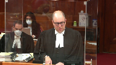

Nova Chemicals Corporation v. Dow Chemical Company, et al.
This transcript was made with automated artificial intelligence models and its accuracy has not been verified. Review the original webcast here.
Justice Wagner (00:00:02): D’accord? D’accord.
Good morning.
Please be seated.
In the case of NOVA Chemicals Corporation against Dow Chemical Company Dow, for the appellant NOVA Chemicals Corporation, Mr. Andrew Bernstein, Sheila Block, Nicole Mantini, and Jonathan Silver.
For the intervener, Canadian Generic Pharmaceutical Association, Andrew Brodkin, Harry Radomski, and Jordan Skopa.
For the interveners, Bell Canada, Rogers Communications, Canada Inc., Telus Communications, and Videotron, Limited, Audrey Bachter, and Danielle Markowitz.
For the respondents, Dow Chemical Company, Dow Global Technology, and Dow Chemical Canada ULC, Steve Garland, Jeremy Want, Daniel Davies, Matthews Burt.
Please note that there is confidential information in this matter that is subject to a protective order from the federal court.
Mr. Bernstein.
Speaker 1 (00:01:45): Justices, this court said in Schmeiser that it is settled law that the inventor is only entitled to that portion of the infringer’s profit that is causally attributable to the invention.
The goal of the remedy is not to punish defendants, it is to put the defendant back in the position it would have been in had it not infringed.
The court of appeal at dow’s urging rejected this idea of putting nova in the position it would have been in had it not infringed.
Doing that would have required nova to pay dow around $350 million.
That’s the profits that nova earned for making infringing forms of polyethylene.
But putting nova in the position it would have been in had it not infringed would not require nova to pay dow another $300 million on top of that, which are the profits earned by a separate business unit that is in the business of making and selling non-infringing ethylene.
This business unit makes ethylene a lot more cheaply than it’s available on the market.
And the trial judge found as a fact that what nova would have done with that ethylene if it had not infringed.
Justice Rowe (00:03:08): What you’re asking us is to say that for the purposes of the profit from the infringing goods, we should look at market price for the ethylene, not actual cost to NOVA.
Isn’t that what it boils down to?
Speaker 1 (00:03:27): It boils down to causation.
What I mean by causation is
Overlapping speakers (00:03:33): I didn’t figure I was gonna get a yes or no.
Hehehehehehehehehehehehehehehehehehehehehehehehehehehehehehehehehehehehehehehehehehehehehehehehehehehehehehehehehehehehehehehehehehehehehehehehehehehehehehehehehehehehehehehehehehehehehehehehehehehehehehehehehehehehehehehehehehehehehehehehehehehehehehehehehehehehehehehehehehehehehehehehehehehehehehehehehehehehehehehehehehehehehehehehehehehehehehehehehehehehehehehehehehehehehehehehehehehehehehehehehehehehehehehehehehehehehehehehehehehehehehehehehehehehehehehehehehehehehehehehehehehehehehehehehehehehehehehehehehehehehehehehehehehehehehehehehehehehehehehehehehehehehehehehehehehehehehehehehehehehehehehehehehehehehehehehehehehehehehehehehehehehehehehehehehehehehehehehehehehehehehehehehehehehehehehehehehehehehehehehehehehehehehehehehehehehehehehehehehehehehehehehehehehehehehehehehehehehehehehehehehehehehehehehehehehehehehehehehehehehehehehehehehehehehehehehehehehehehehehehehehehehehe
Speaker 1 (00:03:36): You know, I think one of the problems is at trial it was phrased as deduct the market cost of ethylene and that put the trial judge in the position of saying, oh, no, we shouldn’t deduct the market cost of ethylene because that’s not the actual cost to nova of making ethylene.
But the fundamental question is always causation.
You have to look at the pool of profits and you have to ask the question of this pool of profits, which portion is causally attributable to the infringement and which portion is not causally attributable to the infringement.
Justice Brown (00:04:17): Just to take a step back, there’s a preliminary step, though, isn’t there, that you’re assuming that these profits represent the best non-infringing option?
We’re not assuming it, Justice Brown.
We need to understand what that term means and what it captures.
Speaker 1 (00:04:36): Yes.

You know, Justice Brown, fundamentally that is the question for this court on this appeal. Okay.
That is the legal question.
The courts below took the phrase best non-infringing option and really limited it.
They said it has to be a consumer substitute.
It has to be something that you could have sold to the same consumers and that’s the only kind of best non-infringing option that you’re allowed to use.
Justice Rowe (00:05:05): It got me confused, because I understood your position to be arguments in the alternative, even if it wasn’t stated as crisply as that.
The first one is that it should be the, in effect, the market price as opposed to the actual cost, which goes into calculating the profit from the infringing use, and if we don’t go for that one, you look at the non-infringing use, then you say you would achieve a higher profit from things like crates and pales, because you had a low input cost from ethylene.
So the cheap ethylene can be plugged in either in terms of reducing the profit from the infringing use or increasing the profit from the non-infringing use.
Either way, you get the benefit of the difference between the cost of production and the market price.
You just plug it in in one of two places.
Speaker 1 (00:06:12): Justice Roe, you may find the little demonstrative that we’ve put at tab five of our condensed book to be helpful.

So essentially what these columns represent is the revenue from selling, it should be a brown book, it has 28 tabs in it.
And it’s behind tab five.
Essentially what you get is there’s four, these columns represent the revenue from selling on the left infringing polyethylene from selling on the right NOVA’s best non-infringing option and I’m hoping that you have it in colour
but if you don’t, you can see that there’s four boxes, there’s four notional boxes that go into the revenue.
There’s the profits earned from selling infringing polyethylene.
That goes to dow, okay, it’s about 350 million, it goes to dow and nobody is contesting it.
There’s the one underneath called polyethylene costs, obviously that’s a deduction, NOVA keeps that deduction because it’s a cost incurred.
At the very bottom there’s a box called ethylene costs, same thing, NOVA got the cash cost of making ethylene deducted from the revenue.
What this appeal is about is the box right on top of that called ethylene profits.
Justice Rowe (00:07:54): Right.
What I put to you is either by increasing the costs relating to the infringing product or increasing the profits from the non-infringing use, somehow NOVA wants to capture and build into the formula of differential profits the difference between your actual cost and the market price for ethylene.
You’re just trying to get it in there.
Speaker 1 (00:08:20): one way or the other.

As a matter of mathematics, that’s absolutely right.
The legal basis for asking for this is the causation principle which is essentially would nova have earned this anyway if it had done its best non-infringing option.
And nova’s argument to the court on this matter is yes.
Nova would have earned those profits regardless of whether it had infringed or not infringed.
And as a result, it’s unjust to force nova to disgorge those profits to death.
Justice Côté (00:08:57): Mr. Bernstein, I want to clarify something with you.
So what I understand your argument about causation and today you are asking us essentially and correct me if I’m wrong to recognize this what we call the differential profits method.
But now he’s arguing in its fact that in the courts below, nova conceded that it was not the right approach to decide this case.
So I would like to hear you on that.
Speaker 1 (00:09:30): Sure.
Let me get that straightened away right away, Justice Cote.
So if you look at this demonstrative, a differential profits approach would say you need to deduct the small column from the big column and give the difference.
You can see there’s an obvious difference.
You can draw a line between them and it gives you a big chunk of that yellow box. Okay.
NOVA has never asked for that.
They’re not asking for that now.
What NOVA has always said is that the rationale or the reasoning behind differential profits according to Schmeiser means that it should have been able to keep its ethylene profits.
If you go to our condensed book at tab 6, you will see this is the closing submission from trial.
This is the closing submission from trial.
And paragraph 103, NOVA asks for the portion of profit attributable to ethylene to be apportioned on the principle that the patent holder is only entitled to receive that portion of the infringer’s profit which is causally attributable to the invention.
Very first case cited is Schmeiser.
105, a patentee is not entitled to profits made merely on the occasion of infringement but not caused by the infringement.
And if you flip over the page, at paragraph 108, NOVA said there’s two reasons why there’s no causal relationship between NOVA’s infringement and its ethylene profits.
First, had NOVA not infringed, it could have made non-infringing profits using the ethylene used to make infringing profits.
That was our argument at trial.
That remains our argument today.
And the only difference is of course now the trial judge has found as a fact that what is said in 108a is true, that NOVA would have used, so in submissions it said it could have, the trial judge has found it would have made non-infringing profits using the ethylene used to make infringing profits.
Justice Karakatsanis (00:11:48): I ask you to go to the next sentence, though.
This will be under 108A. This will be discussed below in the section under capital costs.
And what I’m finding I need your help on is the relationship between your position on the differential profits, or as you say here, non-infringing products, what it would have made, and your submission for fixed costs.
And that is where the trial judge discusses, says Smyzer, and discusses the but-for world and the causation principle.
So two questions.
Are they true alternatives?
Is that how, three questions.
Is that how NOVA put it to the trial judge?
Either or?
And the third one is what is the relationship between the two if you were to be successful here?
And there was to be an accounting of what the quantum of the differential profits were.
Would you necessarily have to deduct the fixed costs?
And how much were those fixed costs?
OK, so Justice Karygk-Potanis.
That’s the area that I’ve been trying to work my way through.
Speaker 1 (00:13:03): So if you go to tab five, it’s really easiest to talk about this when we look at these columns.
So first of all, did nova ask for these before the trial judge? Yes.
Nova said what nova said at trial technically is we are entitled to both of the lower boxes below the line.
In my book they are blue and gray.
The mechanism to achieve that is just to deduct at the line at the market price of ethylene.
That encompasses two things.
It encompasses ethylene profits and ethylene costs.
If nova said you don’t do that, if you are not inclined to do that, at least give us all of the cost box.
Don’t give us just part of the cost box.
In the case of these plants when you are talking about very, very capital intensive industries, if you were dividing the ethylene cost box into fixed and variable, the variable would be quite small and the fixed would be quite large.
The trial judge didn’t accept nova’s primary argument which is we get both the blue and the gray, the ethylene profits and the ethylene costs, but he did accept the idea that it’s entitled to all of its fixed costs.
So you get all of the gray.
We are not asking for any form of double counting.
So our position remains having deducted the bottom box, the appropriate thing to do would be to deduct the second from the bottom box, ethylene profits.
On the theory that the costs are deducted because they are not, they represent something that is not a profit, of course.
They are a cost that’s incurred.
But ethylene profits is essentially the concept that we would have earned them anyway.
They are profits, but we would have earned them even if we weren’t infringing.
Justice Rowe (00:15:15): Aren’t you really confusing two things?
Fixed cost is things like machinery and taking depreciation on plant and equipment and then you’ve got overhead.
You’ve got the front office, you’ve got insurance, et cetera.
And you won.
You won on full costs.
But that’s different from the cost of ethylene which is a variable cost in the sense that the more of these bags you produce, the more ethylene you need.
It’s a direct input as opposed to an overhead or a plant and machinery cost.
So I don’t understand this as being a component of fixed costs.
Speaker 1 (00:16:00): cost of ethylene.
It’s not justice roe.
It’s not and as justice woods said in dissent in the court of appeal, you know, the pitching it as a deduction for the market price of ethylene might have caused some confusion at the trial judge level.
Let me see if I can untangle it a little bit for you.
We say there’s a three-step process.
Number one, what are the profits that nova actually earned?
Number two, what would the profits be if nova had not infringed and number three, deduct.
Costs goes to the first question, right?
Costs goes to what were the profits that nova actually earned.
You can’t make that calculation without understanding the costs.
Ethylene profits goes to the second question, which are would you have earned these profits if you hadn’t have deducted it, sorry, if you hadn’t have infringed.
And if you would have earned the profits if you hadn’t have infringed, then they’re not causally connected to the infringement.
That’s it’s fundamentally, it sounds like an oversimplification, but it actually is that simple.
We say the courts below neglected to do the second step and Justice Stratus’ decision in the court of appeal really says we don’t do that second step.
It’s not something that we do.
It’s not an approach that we take and he essentially rejects it except in the very narrow circumstances where there’s a true consumer substitute, which he refers to as a consumer baseline.
Justice Brown (00:17:34): Okay.
So that brings me back to where I wanted to be which is the language in Monsanto of the best non-infringing option.
And so I’m sorry, Mr. Bernstein, we’re way ahead of that, I realize.
But all of this assumes that the Atholene profits represents that.
You in passing impugned the Court of Appeals view that it has to be something to qualify as the best non-infringing substitute, something that you would have sold to the same consumer.
And I’m wondering if I can just have you show your work on that and explain why that is so.
I mean, if I’m going out to buy, I don’t know, a carton of Saran wrap, you know, and they’re out of Saran wrap, I’m not going to go look for Atholene or a pale or something like that.
I want Saran wrap.
Why is Atholene the best non-infringing option?
Speaker 1 (00:18:33): So the best non-infringing option, let me try to answer that just by reminding you about a few facts and then I’ll get to the substantive argument on why the best non-infringing option does not have to be a pure consumer substitute.
On the facts, so keep in mind what’s happening here.
Nova has two business units.
It’s got a business unit called western olefins and it’s got a business unit called polyethylene.
And the western olefins business unit does one thing, it makes ethylene.
It takes ethane
and it makes ethylene.
It then sells that ethylene and it sells that ethylene to I’m going to call it two categories.
It sells it to third parties and it sells it to its other business unit and the other business unit takes it and makes polyethylene out of it.
Justice Rowe (00:19:26): but it doesn’t sell it it’s in it’s a transfer price it isn’t an actual transaction it’s all within one corporation and the trend let me finish my question it’s a transfer price for accounting purposes so that the company knows i can attribute profits to the appropriate profit center it’s an artificial internal accounting uh… notation it isn’t an actual transaction if there were two companies what company a company b
and the thing was sold then you’d say uh… this is my actual cost because i’ve acquired it in a transaction but there was no such trend
Speaker 1 (00:20:09): transaction so justice row from an internal Nova perspective it is a transaction because there are separate business units run separately It is the transfer price very closely replicates the third-party market price although.
It’s not identical and the Nova never asked to use the transfer price for any purpose It said look we sell ethylene to third parties and let’s use that price to gauge what the profits are not the internal transfer price
So and there was evidence in the record which which I’ll take you to so
The So what is the polyethylene unit do when it receives this ethylene it turns it basically into pellets which is then used to make a variety of plastic products and There’s a whole range of polyethylene uses, and it’s it’s important actually to look at tab three of The book of a condensed book because what it will tell you is that on average during the period of infringement 3.4 percent of Nova’s total ethylene was went into infringing products
So it’s three point four percent.
It’s not like all of the ethylene was used to infringe most of the ethylene You know ninety six point six percent of the ethylene either went to third parties or went towards non infringing profits Products rather three point four percent goes towards infringement The olefins unit that makes Ethylene is not subject to any claim of patent infringement and in fact you can see behind tab one of the book There’s an admit this is this is admissions from Dow at trial on the second page two key admissions number one not all resins made by Nova at PE to infringe the 705 patent and Ethylene doesn’t infringe the 705 pack
so it’s making a non infringing product in a separate business unit and doing a whole Variety of things with it one of which is selling it to its own Polyethylene unit and That polyethylene unit mostly uses it not to infringe, but in the relevant period also used it to make infringing polyethylene when Nova makes ethylene when Nova makes ethylene it
It benefits from something called the Alberta Advantage and the Alberta Advantage see Justice Brown’s nodding his head the Alberta Advantage
Overlapping speakers (00:22:57): Sheep Ethylene.
Speaker 1 (00:22:58): Right.
So cheap and abundant ethane that makes making ethylene in Alberta much cheaper than making ethylene elsewhere.
And therefore, nova makes it more cheaply than it can sell it.
And if it had to buy it, it makes it more cheaply than it would have bought it at.
And it is that differential between what nova makes it for and the market price of ethylene that we’re talking about today.
These non-infringing activities that nova engages in.
Justice Martin (00:23:39): Go to your tab 5 and there’s no colours in ours.
So just to let you know, all right.
But is the Alberta advantage a question of profits or is it costs?
Because I’m confused a bit. Profits.
Speaker 1 (00:23:55): The Alberta advantage is represented by the second box from the bottom that’s called ethylene profits.
That is the Alberta advantage.
Justice Martin (00:24:03): but isn’t it really a cost though why why is it part of the profits and not part of the costs
Speaker 1 (00:24:14): I guess there’s two reasons, Justice Martin.
The first is from an economics perspective when you make something more cheaply than it’s available on the market, you are by definition that’s how you earn a profit as a matter of economics.
And in this case, how do we know?
Because nova would have earned that profit anyway.
And that’s the fundamental issue.
Is that even if they had made non-infringing polyethylene and that’s what the second column is intended to represent, they would have earned that profit anyway.
Justice Brown (00:24:43): Isn’t the answer to Justice Martin’s question, though, it depends on what you see as the best non-infringing option.
If the best non-infringing option is something in which ethylene is a mere component, then it’s a cost.
If it’s the ethylene itself, then it’s the profit.
Speaker 1 (00:25:02): That is it’s getting to a level of esoteric that I’m not sure that I I Totally agree with Justice Brown.

Let me put it in a slightly different way Ethylene if you are making polyethylene Ethylene is going to be a cost that you Accrue if you are making ethylene then the selling price of ethylene is going to represent a profit I think that’s what I said
Okay, well then we are then we agree
Overlapping speakers (00:25:32): Not so esoteric.
Speaker 1 (00:25:33): We agree more strenuously than I thought.
Justice Karakatsanis (00:25:35): So can I just ask you a question of fact here?
You’ve told us that ethylene profits represents $300 million.
Was that a finding of fact of the trial judge?
That comes from Justice Wood’s dissent.
Yes, well that wasn’t my question.
Speaker 1 (00:25:51): But Justice Karygiannis, we are not in any way asking this court to do that quantification.
The parties will basically what happened is after Justice Fothergill’s decision, the parties accountants got together and decided on some money.
There was a few little disputes, et cetera.
We’re not asking this court to order $300 million.
We’re asking this court to find that the courts below aired that Nova was entitled to a deduction for its ethylene profits and then let the accountants do their thing and Justice Fothergill is entitled to a deduction. So that
Justice Karakatsanis (00:26:21): That then leads me to my second question.
Whatever that number turns out to be, is your answer to me about fixed cost then mean that that profit number will have taken into account and deducted fixed costs as well?
Speaker 1 (00:26:37): So, there’s no world in which we are entitled to double count.
When we do that calculation, we will in my submission, we will say essentially what was the market price of ethylene, what have we already deducted for costs of ethylene and we get the delta which is by definition the profits, right?
So, we don’t there’s no world in which we get to count the fixed costs of ethylene again as the ethylene profits.
We can only get the, we can only get that which we have not already got in terms of the cost.
Justice Karakatsanis (00:27:12): So I think the answer to my question is in figuring out what the ethylene products or profits are and you’re taking the revenue the but for revenue and deducting the costs it would be the fixed costs because that’s what you’ve gotten for the overall number.
I’m not sure what the answer is.
Well I think.
Overlapping speakers (00:27:37): The answer is that the accountants will have to…
Justice Karakatsanis (00:27:39): But I understand your assurance you wouldn’t double count, but explain to me why it wouldn’t be double-counting.
Speaker 1 (00:27:47): When you calculate, there’s two components of revenue.
Cost and profit.
Our submission if this had to be quantified would be we would have to take revenue, deduct all of the costs that we’ve already received a deduction for.
Overlapping speakers (00:28:11): Right.
Including the fixed costs. Okay.
Thank you.
And then get the profits.
That was it.
That was my question.
Justice Côté (00:28:17): Sir Burstyn, I have a question for you, since we are on your tab 5 and paragraph 113 of your Fathom.
Speaker 1 (00:28:17): Okay.
Justice Côté (00:28:30): Yes.
Overlapping speakers (00:28:30): Justice Kote.
Justice Côté (00:28:31): So, in principle, NOVA should be entitled to deduct all of the profits that it would have made selling non-infringing polyethylene products if it had not infringed.
But NOVA acknowledges that those non-infringing polyethylene profits cannot be quantified on the current record.
However, there is ample evidence of NOVA’s ethylene profits.
So if I go back to your demonstrative aid at tab 5, so what you mean is that there is no evidence about the PE profits in the top box of your non-infringing option?
Speaker 1 (00:29:13): no evidence, there’s not enough evidence in the record and there’s not enough findings to be honest made by the trial judge for us to say we should quantify this little box on the right hand side.
Overlapping speakers (00:29:25): And you’re not taming it anyway.
Speaker 1 (00:29:27): And we’re not asking for it anyway.
So in part, to be frank, because we didn’t ask for it at trial and don’t think it’s appropriate to be asking for something here that we didn’t ask for at trial, but at every level and contrary to my friend’s argument, we have asked for the ethylene profits and I took you to our submission on closings to say we are entitled to the second box from the bottom, the ethylene profits and that’s what we’re asking for now.
So I want to make sure I get to Justice Brown’s question.
Justice Brown (00:30:08): I mean, just to kind of elaborate on my concern here, your friends are going to say it has to be a true substitute.
Now, how close true is to a precise substitute is a matter of debate.
I mean, you wouldn’t even get a patent if it wasn’t novel.
So it can’t be exactly the same kind of thing.
Monsanto is interesting in this regard, a case about genetically modified canola.
What’s the comparator the Supreme Court uses?
Not genetically modified soybeans, it’s regular canola, which makes sense.
If I go to the supermarket and I’m looking for canola oil, that’s what I’m going to buy.
I’m not going to buy chickpeas.
So that’s the background concern that I have, just so that you can answer that effectively.
Speaker 1 (00:30:58): I understand.
I’m just going to finish off one thing and then I’m going to get right to this.
The thing I’m going to finish off is these two business units, nova sells itself a small amount of its ethylene to make infringing poly ethylene and the trial judge finds as a fact that if it hadn’t have done that, it would have used that ethylene and its poly ethylene manufacturing capacity to make non-infringing poly ethylene.
We concede a trial and it is true that it is not the case that the customers who bought infringing surpass would have bought the non-infringing poly ethylene.
So the question for the court is does that matter when we’re assessing profits?
And my submission to you is that it doesn’t matter and that we are a little influenced by the law of damages in the question of asking what’s the best non-infringing option.
Let me elaborate on that just a little bit.
So the law of damages in patent law basically works like this.
Principle number one, if you elect for damages, you get a royalty.
Principle number two, if you can show that you lost sales as a result of the defendant’s infringement, then you get better than royalty.
You can collect the damages that you’ve earned for lost sales.
Principle number three, and this is where it gets interesting, if the infringer says no, no, you wouldn’t have made those sales anyway because I had something called a non-infringing alternative.
I would have still made the sales that I made.
You would not have made them.
Then that rebuts the inference that the patentee would have made the sales.
And that’s how the chain of causation, it doesn’t matter if the patentee lost sales or didn’t lose sales.
The inference that people are trying to draw has nothing to do with the patentee or what the patentee would have done.
The focus is only and always on the defendant.
What did the defendant do from infringing?
What would the defendant have done if they hadn’t infringed?
And so there’s a bit of a in the federal court jurisprudence below, there’s a bit of, I’m not going to call it confusion, but the law of profits has been infected, if you will, a little bit by the law of damages where this question of is it a non-infringing alternative which means a pure consumer substitute or isn’t it a non-infringing alternative meaning a pure consumer substitute is very important.
In this case, what we’re trying to figure out is what advantage did the patentee gain from infringing?
How was the patentee in a better position than they would have been in if they hadn’t infringed?
And this is a very, it’s really a perfect case for this assessment because we know definitively as a result of the trial judge’s findings what the patentee would have done if they hadn’t infringed.
It would have made another kind of polyethylene that doesn’t infringe.
So we know what the benefits are from infringing.
Justice Rowe (00:34:33): And so if the evidence was that you would have been in the market at just the right time and you would have made a killing on selling plastic pails, so that in fact the alternative non-infringing use would have been even more profitable, in fact you would owe nothing to Dow.
Is that not so?
If not, then it is.
Speaker 1 (00:34:59): So Dow made the surprising move of electing profits in that circumstance, yes, but of course keep in mind that profits is one of a whole panoply of remedies under the patent act intended to do what civil remedies do.
Most patentees get damages, right?
Most patentees get damages.
And so Dow is always in a position to say, number one, I get a royalty on your sales.
And number two, I can prove that you, your sales replaced our sales and I get every penny of profits I lost from those as a result of your sales.
It is always open to the patentee to do that.
And that’s why in my respectful submission there’s a whole collection of remedies because of that.
Justice Rowe (00:35:56): I take that to be yes to my question, but there are other remedies they could have pursued.
Is that an accurate statement?
Speaker 1 (00:36:03): I think so.
Justice Brown (00:36:07): Can I pull you back to our conversation now?
Of course.
So how does what you described capture the value of the patent if we understand that value as being the patentee’s capacity to exclude others from the market?
Speaker 1 (00:36:25): Okay.
So Justice Brown, it’s really important, I think, to appreciate that you’re not trying in a profits case, you’re not trying to capture the value of the patent in abstract.
You’re trying to capture the value of the patent in the hands of the defendant.
Because different inventions will have different values depending on whose hands you put them in.
And so it’s really important to appreciate that what we’re trying to do, and I think Professor Seabrass, I’m just going to see if I can find a spot in my book where he speaks to this effectively, tab 22 of the book.
This may not be the perfect excerpt from this article.
Professor Seabrass explains this, though, in his article, which I do commend to you, and says what we’re trying to do in every case is figure out what did the infringer gain from infringing and take it away.
And Professor Seabrass explains that, and this is the very bottom paragraph, the differential profit approach to an accounting is simply a more specialized statement of the general principle, and the general principle being, you know, basically when you’re assessing these things, assess the difference between the injured position and the original position.
And if you keep on going, it says that the defendant’s profit caused by the infringement is the difference between the profit which the defendant in fact made and the profit which the defendant would have made but for the infringement on the supposition that but for the infringement, the defendant would have used the next best non-infringing method.
And then he goes on, and I think this answers your question a little better, the supposition used by the differential profit method that but for the infringement, the defendant would have used the next best method which can be established to have been legitimately open to the defendant to use is a reasonable one since it says no more than but for the infringement, the defendant would have acted in a prudent and informed manner in pursuing its interest in making as much money as possible.
Indeed, it is difficult to see what other supposition might be used.
I will say Justice Stratus took major issue with this.
He said no, no, here’s another supposition that could be used.
They would have invested in apple and Amazon.
But of course, the problem with that is go ahead and try and prove that what you would have done with your huge tanks full of ethylene and your polyethylene manufacturing capacity is to invest in apple and Amazon.
As a matter of pure fact, most of you have been trial judges over the years.
You would know no trial judge is going to accept, yes, I would have, you know, I was a polyethylene manufacturing company with a big tank full of ethylene and massive capital investment in making polyethylene
but I would have invested in apple or Amazon.
So with all due respect to Justice Stratus, if you establish as nova did here that you have a viable non-infringing option selling products to different consumers, then you know what your gains are from infringing.
It’s the difference.
And just to use the most basic example, Justice Brown, imagine a horseshoe manufacturer who doesn’t use, you know, they’re amateurs.
They’re not great at it.
And so they make horseshoes that only get used in gambling establishments.
And then they figure out a method to make horseshoes better.
And all of a sudden they are infringing somebody’s patent unknowingly.
They’re like, oh, look, we figured this out.
We came up with a method.
Now we’re making really good horseshoes.
We can sell it to equestrians.
And we used to earn $1,000 of profit a year selling it to gambling establishments.
But now we make $1,100 a year selling it to equestrians.
No doubt that the old horseshoes are not a pure consumer substitute.
But you know exactly what the value add is in the hands of this infringer.
So, so just.
Justice Brown (00:41:17): Just to be clear then and not taking issue, I just want to make sure I understand the implications of what you’re saying.
Are you saying that in an accounting of profits, no value is given to the monopoly because we consider this solely from the standpoint of the infringer and what the infringer could have done?
Speaker 1 (00:41:40): So, again, the answer to your question is yes.
The goal is not to assess the value of the monopoly.
The goal is to make sure and I would just take I don’t have this in my book
but I would take the court back to Atlantic lottery in which when you’re dealing with a gain based remedy you have to assess what’s the purpose of the gain based remedy?
Why are we doing this?
The reason profits exist in the patent act essentially is because you don’t want people to do efficient breach, right?
So if you know as a potential infringer I can make $200 infringing and it would only cost $100 in damage to the patent holder then that person has an incentive to breach.
Justice Brown (00:42:30): Look, I’m obviously familiar with Atlantic Lottery, but what we’re talking about here, as you point out, is a statutory standard.
But it is a very bare-bone statutory standard that was given expression, sort of, in Monsanto with the reference to, I know I keep coming back to it, this is my refrain, best non-infringing option.
That, for me, is the trickiest issue in this appeal.
Overlapping speakers (00:42:57): It’s to some extent, Justice-
Where do you-
Justice Brown (00:42:59): draw the line on what basis and you’re saying it’s totally from the standpoint of the infringer and you don’t ascribe value to the monopoly and maybe you’re right but that’s what I’m grappling with.
You ascribe value to the monopoly in the hands of the infringer, right?
Speaker 1 (00:43:15): But you could have two, you could have a really good infringer and a really bad infringer.
And so the really good infringer, you take all their profits.
The really bad infringer, you take all their profits.
And the resulting value will look very, very different depending on whether your infringer is good or bad.
But the point is you only want to take the profits attributable to infringing.
And if you’re concerned, if you’re worried about where to draw the line or do we draw the line, again, you know, this is one of those cases where the line drawing exercise really has to be done in the evidence.
Because it’s just going to be very difficult for you as a, you know, polyethylene manufacturer with a big tank of ethylene to say, oh, my best non-infringing option is going to be to start making horseshoes.
You’re never going to do that.
Whereas if you’re a horseshoe manufacturer who made non-infringing horseshoes for a long time and then, you know, for a few years makes infringing horseshoes, it’s not a very difficult proposition to accept that actually what they would have done as their best non-infringing option.
Justice Brown (00:44:34): So to be clear then, the word best, just simply, I mean the Supreme Court could have written most profitable.
Speaker 1 (00:44:42): They could have.
They could have written most profitable.
Justice Brown (00:44:47): there’s no qualitative dimension to best.
It is simply quantitative in your view.
Speaker 1 (00:44:54): Again, I would refer you to the seabrass article which says exactly that.
Overlapping speakers (00:45:00): Yeah.
Speaker 1 (00:45:00): Which says exactly that which the Supreme Court cites in Schmizer and again for good reason because this is the supposition, right?
Why would you assume that a company would make its?
Do anything, but it’s most profitable non-infringing option
Justice Karakatsanis (00:45:18): Can I bring you back to, because I think part of this is what value do you give to the monopoly?
Part of it is creating some limits on what are the speculative alternatives in the but-for world.
And you, I think, are relying on, well, there’s a stringent burden of proof here.
You need actual evidence to demonstrate that this is, that you could have, you would have taken this option.
So what kind of guidance or conditions would you say attach to that proof of the, you know, alternative but-for profits?
I mean, I know the Federal Court of Appeal has in various places, you know, talked about the importance of the real world and other kinds of comments that suggest you really have to look at it rigorously.
Yeah, but, okay.
Overlapping speakers (00:46:17): Sorry, are you done?
I don’t want to cut you off.
Justice Karakatsanis (00:46:19): I was just going to say, but also when I look at the Federal Court of Appeal, and I forgot which case it was now, they were also prepared to look at options that were actually not available.
So, they could have, but not necessarily would have, I’m trying to remember the, I think the seats that were just not available at all.
Justice Rowe (00:46:42): I think.
Speaker 1 (00:46:45): Soybeans. Yes.
So Justice Karygiannis, there’s two issues that are being commingled a bit.
There’s the legal question of do we do this analysis at all.
Justice Stratus says no, we don’t do this analysis.
Then there’s this other question of if we do do this analysis, are there any legal limits as opposed to evidentiary limits on what the best non-infringing option should be?
And my submission would be that on the one hand there need not be any strict legal limits on what the best non-infringing option would be, but on the other hand, there’s always going to be practical limits to what the best non-infringing option will be.
The further away you go from something that looks like something that your company would have done in the real world, sorry, yeah, would have done if they had an infringe, then the harder, the higher, the more difficult it will be for you to accept, for the court to accept that there was a non-infringing alternative.
That’s a bad turn of phrase.
There was a best non-infringing option, right?
So if nova had gone in guns blazing and said we would have invested all this money in apple and amazon and made a killing, overwhelmingly the likelihood is we would fail and the conclusion that the court would draw is no, you don’t have a best non-infringing option.
Justice Karakatsanis (00:48:25): So you’re not suggesting there needs to be any elevated standard.
It’s just a plain balance of probabilities and it will simply depend on the evidence you need will depend on the factual scenario you’re advocating.
Speaker 1 (00:48:42): Exactly and in this case of course, I mean two things number one
It’s not a far stretch to think that Nova would have done what the trial judge found Nova would have done which is make non infringing polyethylene and sell it and And number two if if you are in a world with a far stretch the risk is on you.
Yeah, mr. I see
Justice Côté (00:49:05): And I, sorry, the dissenting judge discussed, she deferred based on apportionment.
And now he’s saying that the dissenting judge misapprehended the legal test for apportionment, and that she applied Selene’s UK decision, and it had never been done in Canada.
So what do you say on that?
Speaker 1 (00:49:32): So Justice Cote, I’m glad you asked because I’ve been thinking of this is a question that I’ve been thinking of it a lot.
The Schmeiser says common sense view of causation.
Apportionment is really a method in which you apply a common sense view of causation.
So Justice Woods in the court of appeal really, you know, largely hit the nail on the head where she said, and I remember because we were in court and she said to my friend, well, what if 99% of the profit was made in ethylene and only 1% of the profit was made in polyethylene?
So she really says, look, I’m doing a common sense view of causation.
This is what they asked for a trial.
She said it created a little bit of confusion, but what we’re really saying is we need to divide the profits for making ethylene which is a non-infringing activity from the profits for making polyethylene which was an infringing activity.
That’s the result that Schmeiser takes you to.
Schmeiser really just says there’s apportionment has plagued the courts for years because people do things like say, okay,
well, this, you know, additive is 2% of the overall this additive is 2% of the overall product.
It’s the patented additive.
So we’ll give you 2% of the profits.
That doesn’t make any sense.
What if the additive is the reason that people buy this product?
What if the additive, you know, adds a huge amount of value?
What if you have the additive and it allows you to double your profits?
Why would you only get 2%?
Professor seabrass also deals with this pretty extensively where he says, you know, physical apportionment is the wrong way to look at it.
You always want to say what’s the value in the infringer’s hands of infringing?
And so there’s I’ve put in the book
and I probably won’t get there the Luberzal case from the federal court of appeal from the 80s
and it’s a really good explanation of why we do this.
Schmeiser is in my respectful submission kind of the latest and the best iteration of how to do this because it says we don’t need to worry about all of these questions.
You know, we don’t need to worry about the car with the patented brake because you know how to, under Schmeiser, you know how to figure out what the value of the patented brake is.
You ask the question, what’s their best non-infringing option?
Maybe it’s selling a car with an unpatented brake.
And then what’s the difference in profits that they would have made from selling the car with the unpatented brake from selling the car with the patented brake and that way the market, if you will, values the profits in the infringer’s hand which is, you know, approximately a valuing in the infringer’s hands of the monopoly.
Justice Martin.
Justice Martin (00:52:56): I was just going to go back in terms of the best non-infringing option and when you were discussing that, should there be any legal limit like the to the same consumer in terms of that?
Because that’s been proposed and it would be hard to imagine how it would apply when the nature of the product is the one at hand that can be used for multi-purposes.
Speaker 1 (00:53:27): So my submission is no, that rule shouldn’t apply.
It’s arguably been applied by the federal courts of appeal and if you kind of dig hard enough into Justice Stratus’ decision, you may even conclude that that’s what he was really saying when he talks about non-infringing baselines and things like that.
Again, if this is really the horseshoe’s example, right, which is you can determine what a defendant or an infringer gained by assessing what the economic benefits were of infringing to that infringer and it shouldn’t matter at all whether it’s to the same consumer or to a different consumer.
It shouldn’t matter whether you’re selling your horseshoes to, you know, gambling establishments or equestrians.
The point is you make $500 in extra profit from infringing and that $500 in extra profit needs to go to the patentee.
And I’m going to say one other thing in the few minutes that I have left, which is there’s a reason why we need to be very careful about I’m going to call it overcompensating patentees or over punishing defendants in patent infringement cases.
Patents impose a monopoly and in a perfect world what you would have is people competing, sorry, patents impose a monopoly, monopolies impose costs on the public and on economic efficiency and I’ve put some citations about that behind tabs 15 and 16 of my book.
I’m not going to ask you to turn them up.
But patents impose costs and in a perfect world you would have people staying away from the area that’s patented and competing extremely vigorously right up to the line.
You don’t want people shying away from competing vigorously with patent holders because if you do then it kind of has the effect of expanding the scope of monopoly, increasing the economic harm that gets done to the public and to consumers who have to buy the patented product.
So there’s real reasons why you don’t want to, you know, engage in remedies that are going to scare people off.
The other thing and professor seabrass points this out at his blog at tab 17 which I will ask you to go to is that the it’s really hard to know the bounds of the patent monopoly.
It’s really hard.
And it’s hard to know if claims are infringed.
It’s hard to know if claims are valid.
There’s a huge amount of uncertainty.
And the combination so if you have this uncertainty you can see what professor seabrass says for that reason it’s important that standard non-punitive remedies do not make the infringer worse off.
If it’s not possible to determine in advance whether you’re infringing a valid patent the best we can hope for is that if a party does infringe it will not be worse off than if it had managed to avoid infringement.
Otherwise the risk is that investors and business people will avoid innovative fields that are a mine field of patent risk and invest instead in a relatively patent free field like real estate.
The effect will be that the patent system will stifle innovation rather than encourage it.
Justice Rowe (00:57:04): If you undercompensate, then you incentivize buccaneering.
Speaker 1 (00:57:10): Exactly.
Exactly, Justice Roe.
And that’s why as Justice Dawson says at tab 18 the balance at the heart of the act requires perfect compensation. Right?
And that’s really what we want to do.
You don’t want to incur.
Justice Kasirer (00:57:25): Mr. Bernstein, can I ask you over here, can I ask you just a bit of a follow-up to your comments on in respect of justice wood’s dissent in response to justice Cote’s question, your colleagues say that justice wood’s was factually mistaken, that dow’s patent covers the product itself and not the process that goes into creating the product, such that the point is she may well have been right on it
but it doesn’t have any impact on the outcome.
What is your sense?
Did justice wood’s get it wrong or not on what’s at issue here?
Speaker 1 (00:58:13): So two things, the first is that I don’t think justice woods got it wrong.
She knew what the patent was about.
But more importantly, even if she had made that mistake, it doesn’t matter.
The logic of Selenese really holds here.
Imagine, if you will, that ethylene was the subject of a third party’s patent.
So ethylene now is the subject of a third party’s patent.
It’s clear that dow couldn’t keep all the profits because we would have to somehow divide those profits between the patent holder for ethylene and the patent holder for polyethylene.
So of course in this circumstance, ethylene is unpatented.
It’s in the public domain and companies like Nova are free to do it and make it.
Justice Kasirer (00:59:08): Right, but just as Stratus said, 105, what drove the sales of surplus was not the cheaper efficiently produced ethylene that was fully incorporated and merged into the final product, but the superior physical properties and processability of the final product.
It was the higher qualities that were its fruits.
Speaker 1 (00:59:30): So there’s a very clear answer to that, which is that the schmizer approach, that’s impressionistic.
Justice Stratus says look, this is what drove the market demand.
But what schmizer says is actually we can disassemble what drives the profits for infringing polyethylene because if you know that, again, back to the demonstrative, if you know that infringing polyethylene gives you the big column and non-infringing polyethylene gives you the small column, you know exactly what drives profits, right, and how much of the profit from this gets driven by the qualities of the infringing polyethylene.
So this idea of market demand being important, schmizer really subsumes that question of market demand being important.
It does it in a frankly less impressionistic and more rigorous way, and I will just refer you to tab 28, which I’m not going to take you to.
I have 20 seconds to say something about springboard and I’m just going to say something about springboard, which is the balance at the heart of two things.
The first is that the balance at the heart of the act requires that monopolies end and granting springboard profits means that you’re extending them, and the second is the idea of springboard is inherently inconsistent with Justice Stratus’s decision in which there’s no hypotheticals.
Springboard is at its core a hypothetical assessment.
Justice Wagner (01:01:29): Thank you very much.
Justice Brown (01:01:31): Just ask one question, chief.
Did justice father gill error in the calculation of costs?
Did he commit an error in applying full costs?
No, I mean, he That was what you requested him to do, and he did, and he did, and he did, and he did, and he did, and he did, and he did, and he did, and he did, and he did, and he did, and he did, and he did, and he did, and he did, and he did, and he did, and he did, and he did, and he did, and he did, and he did, and he did, and he did, and he did, and he did, and he did, and he did, and he did, and he did, and he did, and he did, and he did, and he did, and he did, and he did, and he did, and he did, and he did, and he did, and he did, and he did, and he did, and he did, and he did, and he did, and he did, and he did, and he did, and he did, and he did, and he did, and he did, and he did, and he did
Speaker 1 (01:01:50): Yeah, in the alternative we asked for him to deduct the market price of ethylene and then in the alternative we asked for him to deduct full costs.
The error that he made is really the error that Justice Woods points out which is having deducted full costs, he doesn’t then turn his mind really to the question of should we, do we need to somehow isolate the profits.
Overlapping speakers (01:02:19): EARNED
Speaker 1 (01:02:19): by making ethylene from the profits earned by making polyethylene.
Justice Wagner (01:02:23): Thank you.
Thank you, Justices.
Mr. Brodkin.
Speaker 2 (01:02:32): Good morning, Justices.
The majority viewed an accounting of profits as part of the remedial armory necessary to ensure that the patent bargain could be upheld and that infringers did not come out ahead.
And to accomplish that objective, the Court of Appeal, the majority, constrained the hypothetical facts as a matter of law upon which an infringer can rely to only true commercial substitutes.
And by that, it meant non-infringing versions of the very same infringing product.
And the question on this appeal is, is that right in law?
And the CGPA says it is not.
I will expand on that with two reasons.
First, it treats the patent bargain as entirely one-sided, ignoring that if remedies are too onerous and become penal, then bona fide challenges to patents and their validity will be discouraged.
And let me give you an example of that in the context of pharmaceuticals.
Assume a generic drug manufacturer who markets and sells unpatented aspirin, generating profit of a million dollars annually.
Assume that same infringer believes that a patent issued for a new cancer drug is invalid, a bona fide view informed by sound principles in terms of the law of patent validity.
And that manufacturer makes a decision to redirect its resources entirely from the aspirin field to the cancer drug field.
And when it does so, it achieves profits of $2 million annually.
So by redirecting its resources, the generic drug manufacturer earns increased profits of $1 million.
However, based upon the decision below, if its patent challenge brought in a bona fide way is found to have been unsuccessful, it will be required to turn over $2 million to the patentee.
So the question becomes, will a rational actor risk $2 million to earn one?
I think the answer is quite possibly no.
Every year in the federal court, every year, patents are declared invalid that the commissioner of patent thought was sound to have issued.
Invalid because the requirement to the patent act had not been complied with.
And when that happens, medicines that were previously charged in dollars are now charged to patients in pennies.
And that has to be, from a societal basis, a good thing.
It’s never been part of the patent bargain to allow monopolistic prices to be charged on the strength of invalid patents.
And when you view this way, judicial doctrine, which makes it impossible to assert I would have made aspirin in the hypothetical world, and that is what the Court of Appeals decision does, discourages bona fide challenges.
And in the view of the CGPA, it must be very carefully circumscribed.
Let me turn to the second aspect of the decision that we find problem in, and it really ties into a comment Justice Roe made.
Justice Stratis’ decision simply misunderstands the consequences in the election of damages that flows from an argument made by an infringer.
I would have continued to make aspirin.
So what are those consequences?
When such an infringer makes that argument, they are conceding in the hypothetical world that they never would have entered the cancer drug field.
And what that means is that in the hypothetical construct, every sale it made would have been a sale of the patentees.
And the patentees, therefore, would make an election, and they would elect damages.
And nobody would end up ahead.
The patentee would be fully compensated, and the infringer would not gain a benefit.
Now, of course, there are times where the damages remedy will be constrained by reason of the acts of the patentee.
Non-practicing entities will be limited to royalties.
But that doesn’t upend the patent bargain at all.
It gives value in terms of damages in a way that is consistent with the way the patent is used by the patentee.
The CGPA submits a singular, unified, harmonious approach to damages in an accounting of profits is warranted.
Trial judges should hear evidence.
Evidence as to the hypothetical world, fanciful theories will be rejected.
Evidence will be necessary.
And in the end, what will occur is that the true consequences of infringement will be found, and the awards that are to be issued will be appropriate.
No more, no less.
Thank you on behalf of the CGPA for the time.
Justice Wagner (01:07:25): Thank you very much.
Speaker 3 (01:07:33): Good morning, Chief Justice, justices.
Patent cases arise in a particular factual context, and this case is no exception.
But this court, of course, has the difficult task of ensuring that patent law is interpreted and developed in a way that can accommodate the multitude of industries to which it applies.
The coalition intervenes to provide a broader perspective and to illustrate why flexibility is crucial in this area of law.
The coalition’s perspective is informative because it illustrates why the Federal Court of Appeal majority’s faithless fiduciary premise to the accounting remedy is flawed.
As Professor Seabrath and others have pointed out, telecommunications is an industry that is densely packed with patents, often called patent thickets, many of which may be invalid and which are held by patentees who do not use or sell their technology, often referred to as patent trolls in the case law.
In this space, infringing patents is unavoidable if innovation is to occur.
Elections for an accounting are to be expected because patent trolls, having never sold the technology, don’t have lost profits to claim, though they could, of course, always claim a reasonable royalty.
But innovation must occur in this space.
The Telecommunications Act tells us that modern telecommunications is essential to no less than Canadian sovereignty.
The industry must innovate, all the while maintaining affordability and accessibility across urban and rural Canada.
It’s a tall order.
The industry has to be able to make innovation and investment decisions in this context.
If the accounting remedy overshoots, the market doesn’t disincentivize infringement in an industry where infringement is inevitable and often unintentional, it chills innovation and impedes statutory objectives.
The coalition wholeheartedly agrees that bad actors should be punished, but not every infringer is a bad actor, and punishment should be done through punitive damage awards, not the accounting remedy.
The bottom line is that the remedy must be flexible, which means that hypotheticals which are inherent to the analysis must, in some circumstances, be broader than the true market substitute, and cost deductions must be permitted and assessed on a case-by-case basis to best capture the profits caused by the infringement.
Justice Brown (01:09:30): By what reference point, Ms. Bokter, if it’s not a true market substitute, then where would, how would you describe the boundaries of what qualifies as the best non-infringing option?
Speaker 3 (01:09:43): I would describe the boundaries of the best non-infringing option as what the infringer could have and would have done.
So if we take the Schmeisser example and let’s suppose that Schmeisser had been primarily a corn farmer instead of a canola farmer and in the same way patented canola seed makes its way onto the north side of Mr. Schmeisser’s farm and he decides to split his crop half corn and half canola and the evidence is that had this not happened he would have simply dedicated 100% of his crop to corn and he would have made the same amount of profit because they’re priced the same.
Well we all know that corn and canola are not perfect market substitutes but applying Schmeisser the outcome should be the same.
Ultimately Schmeisser the corn farmer profits no more from the infringement than Schmeisser the canola farmer so we say the accounting remedy should yield the same result
and I think that you know I can see exactly where the court is struggling
and I think the federal court of appeal also struggled and said that
but the federal court of appeal acknowledged at paragraph 71 in the majority reasons that it is indeed arbitrary to cut it off at the true market substitute but that their answer was to say well then let’s just throw out but for reasoning entirely and our answer is to say let’s let’s let’s manage but for reasoning with appropriate evidentiary burdens and we reference that paragraph 23 of our factum some of the criteria that the federal court of appeal case law has used to try to to try to manage exactly these but for hypotheticals including economic viability business strategy history past experience recreation of the market and sunk costs in corroborating this aspect of the non-infringement infringing option you know I just want to remind the court that this but for type reasoning is is employed across various different areas of the law at in clements versus clements the court said in looking at hypotheticals it’s a factual inquiry using robust common sense so there’s an evidentiary aspect to this and there’s also a robust common sense aspect to it
and we don’t let the floodgates impede our use of this very well-established principle in other areas of the law and we shouldn’t let it do so in the realm of patents so in our solution it’s the
it’s it’s not to artificially throw out but for reasoning but managing it with appropriate evidentiary burdens as we do across multiple areas of the law flexibility is the key here
and we submit that the same flexible approach should apply to cost deductions the fca majority says that it’s accepting cost deductions because it rejects hypotheticals but in our submission one does not preclude the other and fixed fixed cost deductions are tied to causation and not to a rejection of hypotheticals again flexibility is the key and we would respectfully caution against adopting any formulaic proposals the telecoms industry is a prime example of an industry with enormous fixed costs think about the establishment of networks to convey signals and how those costs are accounted for should require a proper factual context
and we would simply ask the court to confirm that these costs are to be taken into account on a case-by-case basis
Justice Rowe (01:12:38): Is the, is the matter of the treatment of fixed costs before the court because the one who lost on that issue was Dow and they didn’t cross appeal?

Are you not asking us to rule on an issue that is in fact not before us and has not been dealt with between the parties?
Speaker 3 (01:12:59): Thank you, Justice.
I know the respondent does make that comment, but this is this is an issue that occupies 21 paragraphs of the federal Court of Appeal majority’s reasons, and it is an issue that the federal Court of Appeal majority ties to its rejection of hypotheticals and all we want to say is that if the court agrees with us that that that reasoning should be overturned, but it shouldn’t throw the baby out with the bathwater and that there actually is no connection between rejecting hypotheticals and accepting fixed costs.
So we’re just asking to avoid any unintended consequences and to just keep the door open for appropriate facts and appropriate cases.
Thank you very much.
Justice Wagner (01:13:33): We’ll take its morning break, 15 minutes.
The court, la Cours.
Thank you.
Be seated.
Mr. Garland.
Speaker 4 (01:14:48): Good morning chief justice, good morning justices.
Just in terms of a road map I do want to make a few preliminary comments and some of the facts I think would provide some helpful context and then I’ll dive into then the two issues of ethylene profits and spring board profits.
I think it’s important to recognize at the front set that the out front that we’re not talking about simply some kind of more polyethylene.
The dow invention was significant.
It provides a novel inventive polymer blend.
It’s a new kind of plastic with better properties, a unique combination of strength and process ability and it opened a high end niche market.
The trial judge’s award came out to be a large number.
That’s true.
But that is because the level of infringement that was engaged in was nothing short of massive.
Nova infringed dow’s patent for eight years earning over a billion dollars in infringing revenue.
And dow’s invention was valuable to nova.
The facts are clear.
This was found as a fact.
That nova could not have completed competed in that niche market without infringing.
They admitted that.
The only way they could compete in that niche market is by selling their infringing surpass.
It was a valuable invention to nova.
It got them in the marketplace.
As noted by justice fathergill, nova specifically targeted dow’s patented elite product.
It designed it with that product in mind and designed it as a drop in replacement for elite.
And this perhaps goes to a question that justice has had.
But all of the profits that were made by nova with its surpass were driven by the patent, the invention and the unique qualities that it provided.
My friend called that impressionistic.
I’m sorry, that’s not the case.
It was found as a fact that all of the sales of surpass were driven by the patented qualities that they were able to display in their surpass product.
That’s not impressionistic.
That’s a finding of fact.
We had a brief comment or two this morning about justice woods.
I can come back to that.
But again, it’s important to realize that dow’s patent covers a product.
How you get there is irrelevant.
The patent claims are to novel products that never existed before.
Not to a process used as part of a larger series of processes to make some other product.
And nova’s infringing surpass is the novel patented product.
And we say that’s where unfortunately we say justice woods went astray on the facts.
But that’s really the primary basis for that.
Let me jump in then to the ethylene profits issue.
Nova in this court for the first time, I think that’s important to recognize, for the first time tries to argue that the differential profits approach as discussed by this court in smyser should apply to the profits it says would have made on its pale and crate products.
It’s a differential profits approach being applied to pale and crate.
Let’s make no mistake about that.
What they’re saying is because of admissions that they made or concessions that they made before, below, we can’t get all of those profits to apply now.
But they’re still trying to get a portion of what they say are profits that come out of or embedded within the profits they say they would have made on pale and crate.
That’s the first time they’ve run this.
And as we’re going to see, it’s completely contrary to what they actually said before the federal court and what they said before the federal court of appeal as to how smyser and a differential profits approach should apply.
This is completely contrary.
So their whole case now comes down to looking at smyser for the first time and the differential profits approach and focuses on a single sentence, the next best non-infringing option and indeed their whole case rests on the one word option.
And we say they take it in isolation and they’ve removed it from the context of the case and all of the cases that followed.
And in so doing, it is a radical and unsupported departure from smyser.
So what’s the departure?
And as you’ve heard today, where smyser and the cases relied upon smyser, by smyser and the cases that followed smyser.
Mr. Garland, I’m here.
Justice Côté (01:19:45): Sorry.
I understand your point about the position taken by nova here as opposed in the courts below, but is it not a fact that what nova asked in front of all the courts was to get the profits coming from the ethylene and the concession they made was in the context of an admission of a concession?
Speaker 4 (01:20:07): The heading is full cost accounting is an accepted method of evaluating profits.
The goal of an accounting of profits is to put the wrongdoer in the position he would otherwise have been in had he not committed the wrong.
Not sure that’s accurate but it doesn’t matter.
In Smyzer the Supreme Court recognized that the preferred method for achieving this goal is the differential profits approach.
Now they quote Smyzer where profits are allocated according to the value contributed to the defendant’s wares by the patent.
This method they say allocates only profits that the defendant derived as a result of the invention i.e. profits that are causally attributable to the invention by comparing them, again this is NOVA, with profits that would have been earned on a true substitute or direct non-infringing alternative product.
So they’re telling the Court of Appeal that this is what Smyzer is saying that in order to be able to do a differential profits you have to be able to have a true substitute and if you don’t have a true substitute then you can’t do a differential profit.
Overlapping speakers (01:21:14): Maybe they were wrong in their reading of Smyther and are we bound by a wrong reading by your party?
Speaker 4 (01:21:20): It’s a very good point, of course, the law is not, my friend won’t take any offence at this, the law is not set by, on the basis of what NOVA has to say about it.
I fully appreciate that.
It’s the next paragraph, though, I think this really comes to bear in terms of what’s before you today.
All parties agreed that the differential profits method was not the appropriate method in this case.
But as the Supreme Court said in Smyzer, this method is not the only means of evaluating or valuing infringing profits.
As this court remarked in revay, endorsing the differential profits method did not disclose, did not close the door indefinitely on the use by a trial judge of other valuation methods better suited to a different set of facts.
In this case, again, this is NOVA, the trial judge concluded that the method best suited to the facts was full cost accounting.
So keep in mind what they’re saying.
It’s not just a concession that you shouldn’t be doing a full cost accounting in this case.
It’s telling the court, and in fact they say this further in the same fact in paragraph 33, they’re telling the court in fact that when a differential profits approach does not apply because we don’t have an actual non-infringing substitute, as an alternative, you can apply full cost accounting.
Justice Côté (01:22:50): This was the response to your cross appeal.
That’s correct.
And your cross appeal was to contest the award on the full cost.
Our cross appeal was to contest the awarding of the full cost.
That’s very true.
Thank you.
Speaker 4 (01:23:07): acknowledged is in fact here it was proper to do full cost accounting because it’s an alternative to differential profits on their pale and crepe.
That’s what they said and they got that.
They were successful on that and that resulted in an extra $200 million that they could apply to their infringing profits.
They actually said at trial that direct or sorry that full cost accounting will be a rough substitute for doing differential profits on their pale and crepe, again, also in return.
Justice Karakatsanis (01:23:43): So can I just ask you then because I just want to confirm at trial profits or the fixed costs which you’re telling us are roughly 300 and 200 million and if I understood correctly before this court they’re asking to keep the fixed costs plus the cost to pay for the fixed costs.
So can I just ask you then because I just want to confirm at trial profits or the fixed costs which you’re telling us are roughly 300 and 200 million and if I understood correctly before this court they’re asking to keep the fixed costs plus the cost to pay for the fixed costs which you’re telling us are roughly 300 and 200 million and if I understood correctly before this court they’re asking to keep the fixed costs plus the cost to pay for the fixed costs which you’re telling us are roughly 300 and 200 million and if I understood correctly before this court they’re asking to keep the fixed costs plus the cost to pay for the fixed costs which you’re telling us are roughly 300 and 200 million and if I understood correctly before this court they’re asking to keep the fixed costs plus the cost to pay for the fixed
Speaker 4 (01:24:06): profits that’s exactly right there is it a one-to-one double dipping no is there significant overlap is there is there are they going back to the well for a second round yes
Justice Moldaver (01:24:17): Can I just ask you this, sir?
Seems to me here we’re dealing with a concept of consumer substitutes, and we seem to be getting told that virtually anything they could have done with the ethylene that would have had nothing to do with a consumer buying this product is something that they can somehow deduct.
Is it your position that when we talk about consumer substitutes, we’re talking about something that is at least in the ballpark of what your client’s patent, the discovery that you made, sort of brought a new product out into the market?
As opposed to, you know, we could have been selling shoes, but we decided to go into this, and in the shoes we used some ethylene, too.
I know that’s a dumb example, but I’m just trying to say…
Speaker 4 (01:25:15): I don’t think it’s a dumb example because in fact nobody is saying yes in this particular case we’ve got something else we could have done with their ethylene but they’re saying in fact you should be able if you can prove it you should be able to look at any business opportunity including and I know they don’t say you know investing in Amazon because they said well that’s you know who’s ever gonna be able to prove it but the point is they’re saying you should be able to engage in any other kind of activity and if I could show that I could have engaged in some other activity and made profits I should be able to use that so when you come back to your where you started with your question about the consumers perspective it really comes down to this is you’re trying to evaluate what the what the value is of the exclusive rights what does the patent actually give whether it’s in the hands of the plaintiff or in the hands of the infringer and there what you’re looking at and they talk about a non-infringing option in Smyzer but I’ll get into this when you really look into the case and the cases they relied upon what they’re talking about is look at is there something else in that market and that’s really what I think it’s a market
not so much a consumer based focus it’s a market based focus is there some other non-infringing product in that market and we’re saying it’s the next best one that’s that you could actually sell in lieu of the infringing product and if the answer is yes then that allows you through the differential profits approach to have an idea of what does what’s the value that the patent then actually brings to the market where the exclusive rights exist and that’s really all that Smyzer is saying that’s how they looked at it and indeed that’s how they applied it and that’s how all of the post Smyzer cases have applied it and there’s no dispute there’s no variance in how this has been applied.
Justice Brown (01:27:04): Well, although that’s not what the court said, right?
It just simply referred rather opaquely to a best non-infringing option.
Now, in Monsanto, I always call it Monsanto, but in Schmeiser, the comparator was canola, but that was because Mr. Schmeiser, you know, wasn’t investing in Amazon, Mr. Schmeiser wasn’t, you know, manufacturing polyethylene.
Overlapping speakers (01:27:28): Right.
Justice Brown (01:27:28): Mr. Schmiser farmed and farmed canola, so it
I’m not sure what we can draw from the application, but I’m open on
Speaker 4 (01:27:37): That’s a fair comment.
I would say this.
If you look at Monsanto, the only reason why I use Smyzer is because there’s three or four other Monsantos that I’ve used in the past, and that’s the reason why I’m using it, is
Overlapping speakers (01:27:46): Everyone else uses Schmeisser, I know, yeah.
Speaker 4 (01:27:49): But let’s break that down.
First of all, let’s look at the language itself that the court used.
I think you picked up on this earlier this morning.
The language they talk about is value based approach and they’re talking about the value of the invention, number one.
Two, where profits are allocated according to the value contributed to the defendant’s wares by the patent.
As we said, the defendant couldn’t be selling any of these products but for the patent.
That was clear.
Justice Moldaver (01:28:17): Which is the exact opposite, if I understand it, in Schmeiser where the patent really had nothing to do with what he was selling other than it enabled some, if you use the patented product, if I understand this correctly, you might have had a better crop, you might have had less bugs, et cetera, et cetera.
But what did that have to do with the end product, which was canola for canola.
Speaker 4 (01:28:45): That’s where I was going to next.
This is the point where if you roll your sleeves up on this miser case you’ll see in fact that when the court was considering what the next best non-infringing option was, it was an actual true substitute for the patented product in the marketplace.
So what they looked at was traditional canola seed as the next best non-infringing option which was a true substitute. Why?
Because from the purchasers perspective it was irrelevant whether it was genetically modified seed or traditional seed because they were using it to feed their cattle.
Justice Moldaver (01:29:24): That’s what distinguishes Teledyne too.
Teledyne is where you got shower heads that are pulsating versus shower heads that aren’t. Right.
And the court looked at that and said, wait a second.
This is apples and oranges.
Speaker 4 (01:29:37): Exactly.
And that’s why they had to disgorge all their profits.
Even though the defendant was still selling other kinds of shower heads to play in that marketplace they only had one option was to infringe so they had to disgorge all the profits.
So coming back to smizer, you’re right, the invention was the benefit of the invention flowed to the grower of the seed.
It allowed the grower of the seed to actually save costs on herbicides because the seed was herbicide resistant, less herbicides, less people walking on your land more often, the spread herbicides, your yield goes up.
The advantage was to the person growing the seed, Mr. Smizer, if you will, but Mr. Smizer never actually used the invention.
He didn’t spray his plants with the round up herbicide that was to be married up to the round up seeds.
So he never actually got the benefit of it, of the invention.
So his costs were not reduced.
So the revenues are the same because the price for traditional versus genetically modified seed is the same in the marketplace.
But he didn’t get the benefit of the profits so all of the profit of the invention, so all of the profits that he derived were related to something other than the invention.
And that’s what the screen court says.
All of his profits were driven by other matter.
Justice Moldaver (01:30:57): And just to finish off with this, and then I’ll leave you alone, um, this kind of approach, the methodology that we’ve been talking about, we’re talking about consumer product, people, what people will buy in the marketplace.
Now, there are other types, I guess, of, um, there’s process, processing substitutes that really don’t have that much effect one way or the other on what people will buy in the market, or component, component sort of substitutes that may or may not, but this is a pure consumer product that, that your client had, that they didn’t, and wouldn’t have had, but for the infringing, and there was nothing even close to it, nothing even close to it.
And so, and so, and so,
and so, and so, and so, and so,
Speaker 4 (01:31:50): Fathergill found, in fact, the two products are really in a distinct market because they’re the only two with that unique combination of superior strength and processability.
There were other products in the broader metallocene linear low density and you see reference in the case to exceed but just as Fathergill said exceed doesn’t compete with these guys because exceed doesn’t have the processability.
As a result, they can charge more money for their product.
So if somebody is not interested in the processability, they’re not going to spend more money on it.
They’ll go to exceed.
They’ll always go to exceed.
But when they’re now talking about buying surpass or elite, they’re there because they want those enhanced properties.
And just so it’s clear, we’re talking about the customer here.
It’s not the Joe consumer.
It’s actually companies that get the pellets and then create the packaging itself.
But in essence, that’s the customer we’re talking about.
But perhaps Justice Brown to go back to your point about what can we take from Smyzer.
We’ve talked about the language itself and the facts of the case.
But then let’s look at what Smyzer and the court actually referenced in drawing their conclusions.
They referenced two cases in the paper by Professor Seabress.
The one case they reference that’s relevant is the Colette decision.
So when they’re actually talking about the comparison that is to be made to the patented invention, they cite Colette.
So Colette, it’s an old decision of this court back in 1886.
But the patent was to a method of making tapers.
And tapers are just long candles that kind of taper at the end.
So the invention was actually to an improved method for making them.
And what the Supreme Court said, and it’s actually Justice Quinn, that the non-infringing option to be considered is not some old way that you might have been able to do it.
It’s the best way that you could do it without infringing.
And so his criticism of what the trial judge did was saying you did the comparison to the wrong product or wrong method.
You should have compared it actually to the method that’s non-infringing but is actually the modern method that was out there as an option.
But again, it’s clear they’re looking at what’s an actual direct substitute for the actual patented invention itself.
So that’s one thing I think that we’re assisted with in terms of really understanding where Smyzer was.
And the fourth thing is when they referred to Professor Sebrass’ 2004 paper.
Now, what he has to say in his blog these days, I would submit it’s something different, but in 2004 when he wrote that paper and it’s cited by Smyzer, they’re citing it when the court was discussing the differential profits approach and again the appropriate non-infringing option.
So if you actually look at his paper, in every case that he gives as an example of the differential profits approach and encouraging courts to adopt the differential profits approach, in every case those decisions are looking at a direct substitute for the patent.
That’s the non-infringing option that those cases are referring to.
And he refers to Canadian cases like reading and Bates.
My friend says in fact that they rejected differential profits.
They actually didn’t.
They actually looked at these other non-infringing options that were out there that the defendant said we could have used instead of the patented method and the court said no, it’s clear.
That was a win-or-go-home contract.
You had to land that pipeline across the river.
And if you didn’t do it, you weren’t going to get any money.
So the only option you had to actually compete was to actually use the infringing method because that’s the only method that was going to guarantee you that you’d actually land the pipeline.
Justice Côté (01:35:30): When the trial judge said in Paragraph 158 of these reasons I’m satisfied that if NOVA had not manufactured the infringing products it would have worked assiduously to fill out the PE2 plant with other products.
Overlapping speakers (01:35:47): Absolutely.
Justice Côté (01:35:48): pail and crate and other reasons that form part of Nova’s product wheel.
I’m further satisfied that Nova would have sold these other products within North America or to Asian markets.
So this finding means nothing in terms of, it does not correspond to a best non-infringing option to use the words of Schmeiser.
Speaker 4 (01:36:09): You’re absolutely right.
His finding on that point had nothing to do with differential profits because, again, they weren’t choosing or trying to get a differential profits approach based on their pailing crate.
They said we’re not going there, we can’t go there, the law doesn’t allow us to go there.
What they were saying is there’s an Australian case called dart.
And the supreme court in an Australian dart said look it, if you can actually show that, you know, you didn’t have unused capacity and therefore you decided to just put some, to top up your capacity and do something infringing, if you can actually show that you actually forego actually doing something non-infringing, so you’re actually working at full capacity when you decided to infringe, then on that basis it’s reasonable to say okay,
well, you would have incurred those fixed costs in any event, whether it’s with non-infringing stuff or infringing stuff and therefore in that scenario will allow you to deduct full costs as opposed to incremental costs.
So what they were asking justice father Gill to do is I want you to make a finding that the sale of pailing crate would be enough to have covered the costs, the fixed costs or the portion of the fixed costs that we’re talking about.
That’s all they were asking him to do and that’s all that he found.
And that’s why if we come to my friend’s tab 5, I’ll come to that in a moment or I can deal with it now, that right-hand column that he showed you, none of that was proven.
I mean, you have to understand that when we come to the actual facts of the case, there was no factual finding that NOVA would be able to recover sufficient profit from the sale of its pailing crate to cover the embedded ethylene profits.
There’s no finding of fact to that effect.
All the trial judge says is look, I get it, you’ll have sold enough that you would have covered this proportion of these fixed costs.
What the trial judge did say about the pailing crate market is that it was characterized by low profit margins and was not always profitable.
So it goes against in fact the suggestion that he made a finding that they would have recovered their ethylene profits embedded in the pailing crate.
My friend must say that four or five times in his factum.
There’s no such finding by the trial judge.
Justice Côté (01:38:27): and where the trial judge says there is no dispute that Nova benefited from the Alberta advantage in the production of ethylene, and it produced ethylene at its own facility at a significant discount compared to the market price of ethylene.
So is it not evidence that their cost was not as high as the cost in the market?
Yes, in the market.
Speaker 4 (01:38:52): Yeah, so on that point, I’ll answer that because I would like to come back to tab five.
So there was no finding by the trial judge of this market price.
Again, their case in the facts, never mind the law, the case in the facts fails on three or four basic points.
There was no finding about what the poly profits would be so as to recover their embedded ethylene profits.
Two, there’s no finding of what those ethylene profits were. Why?
Because there’s no finding as to what this alleged market price was.
This is a price that Nova put forward saying we’ve got some customers whom we sell under long-term contracts to and we’ve just done an average over these long-term contracts and this is what it is.
Overlapping speakers (01:39:39): Well those are variable rate those are variable rates they’re getting under that contract too.
So the rate that the price is right over the yeah.
Speaker 4 (01:39:47): So but the point is he never he used I think he might actually put market pricing quotes He’s just saying this is what?
Nova was suggesting he made no finding in fact that they actually would have been able to obtain that Market price in the market in selling the ethylene and why one that just wasn’t proven and two
and this is what’s picked up by The federal Court of Appeal in order to be able to recover these embedded ethylene profits in the sale of pale and crate It’s all contingent on the hypothesis That there is a market for that ethylene That if you hadn’t used it in your pale and crate I’ve been a go out into the market and sell it at that market price well.
They didn’t show market didn’t prove market price and to They never established in fact that there was a demand for this extra ethylene, and that’s the reference That the federal Court of Appeal picks up on where there was evidence before the court That in fact the there was a significant Excess in capacity in the ethylene plants and so the federal Court of Appeal notes in fact there was confidential evidence that Demonstrated that they wouldn’t they did not make out the actual demand so they failed in terms of the the fundamental factual findings required To prove at least on the facts that they actually had these ethylene profits.
They failed right across the board They didn’t prove what the poly Pale and crate profits actually were and and you picked up on paragraph 113 They tell you the record doesn’t even support that kind of occlusion Conclusion and to they didn’t show there’s a market price that somebody was prepared to pay and they didn’t show there’s somebody out there Was actually looking for this extra ethylene, so it fails on the facts I?
Hope I answered your question, so let me let me come back then to town.
I just move you
Justice Martin (01:41:37): Yeah, from the facts and I understand your position there which is that they have not demonstrated through evidence that there were other options. Right.
All right.
But the federal court of appeal goes further and says that the but for analysis basically has no place and it would seem to me that you don’t have to make that case to prevail.
But doesn’t Schmizer with its emphasis on causation embed a but for test into our law? Right.
Speaker 4 (01:42:10): Right.

So I think it’s a very good question, justice Martin.
I think the answer to that is yes in the sense that if you look at what justice Dawson had to say or justice McTavish had to say in per end up pearl where they set out that four step test and really the first two steps are is there an actual true substitute that would be considered as a true substitute within the marketplace.
And then she goes on to say you defendant you’re not out of the woods yet.
Now you’ve also got to show in fact that you could have, you know, had access to that non-infringing alternative and four that you would have had or actually use that non-infringing alternative. Okay.
You’ll get no argument from me.
I think there might be some space there between what justice Stratus had to say and what justice McTavish or justice Dawson might have had to say on points three and four. Okay.
But the basic point is the actual first step that you before you get into steps three and four is you have to show there is a non-infringing substitute and in this case they failed.
They admitted they stood up their first words out of their mouth at opening a trial was we don’t have a non-infringing substitute.
Does that make sense?
Justice Jamal (01:43:21): Does that make the concession a concession of fact, not a concession of law despite how it’s being spun?
So it’s as simple as that, really, that we’ve got a concession of fact reflected in paragraph 146 of the trial judgment.
It’s reflected again in this appeal factament.
It’s as simple as that.
Speaker 4 (01:43:44): I would agree.
What is or is not a non-infringing alternative in the marketplace?
That’s a fact-driven exercise.
Having made that concession right at the front of the opening argument that we don’t have a non-infringing alternative, therefore differential profits doesn’t apply, just as father makes that as a finding of fact, he adopts that in one of his paragraphs in our condensed book and says there’s no alternative.
I don’t have to worry about doing a differential profits analysis.
That was a concession on the facts that the court adopted.
Whether or not something is or is not a substitute or an option, how is that not fact-driven?
They’ve never challenged any of the findings of fact of the trial.
Justice Brown (01:44:26): So can I just, I just want to pull you back to the question about, Justice Martin’s question about causation.
Overlapping speakers (01:44:34): Right.
Justice Brown (01:44:34): So paragraph 40, justice Stratus says in order to do this properly in accounting for profits courts must avoid the hypothetical but for world.
Questions of what the parties could, would or should have done are irrelevant to the analysis.
Are you conceding error in that passage? No.
Okay, so all right, so maybe you can elaborate.
Speaker 4 (01:44:54): I think if you step back and we try to be fair to Justice Stratus and some of his language has been dissected at great length, I think if you step back and understand what he’s trying to say.
When you do a damages assessment, you’re dealing with a hypothetical world.
You’re trying to determine if there were some hypothetical profits that the plaintiff would have made.
It’s a hypothetical but for world looking at hypothetical profits.
All I think he’s really saying is look, when it comes to an accounting, we’re not dealing with a hypothetical but for world.
We know the profits that you made.
The profits are these are actual sales, actual revenues, actual costs, actual profits.
The question then we get to and he was prepared and he said this that you still get a comparison going on but he’s saying is there an actual non-infringing substitute and if there is, that gives me the ability to actually do that differential profits approach and I can get that differential.
Justice Brown (01:45:50): But doesn’t that still take you into a counterfactual world?

If you look at the passage from 102 of Schmeiser, a comparison has been made between the defendant’s profit of tribunal intervention and his profit had he used, which he didn’t.
So we’re in a counterfactual world.
Now, I may just be an old torts lawyer, but that sounds to me like but for causation.
Speaker 4 (01:46:13): I think you’re right in that sense, but my point is not so much whether there’s a real difference in the principle, there’s a real difference in the principle, there’s a real
Overlapping speakers (01:46:19): Right.
Speaker 4 (01:46:19): I think it’s fair to say that justice Stratus has a view from a terminology standpoint that he doesn’t view that as the but-for world The hypothetical but-for world that we’re talking about in damages, but he acknowledges you still do an actual comparison step
Overlapping speakers (01:46:33): So what I want, I just want to understand what it is you’re conceding then, and…
Speaker 4 (01:46:37): The concession is this.
If you look at that four step process that the federal courts of appeal have talked about, the first two steps just say is there a true non-infringing substitute.
And in our case, nova admitted there was not.
And therefore Justice Stratus correctly says, well, we don’t need to go into questions three and four because there’s nothing to actually do with differential profits, you know, against.
We only go into questions three and four if we find there is a non-infringing alternative and then according to if you look at lovastatin and perindopril, they would suggest that you then go on to say, well, would they actually and could they actually.
Justice Stratus seems to be saying in his view that, you know, that’s probably not necessary to go to three and four.
In his view, if you establish that there is a non-infringing substitute that’s actually out there that you can use as this baseline, in his view, you’re okay, defendant.
We can use that now.
It shouldn’t come down to it being fact specific to the defendant as to whether or not in fact they could actually use it.
So his approach, I mean, if you’re being fair to Justice Stratus, his approach in applying the differential profits approach is actually broader because he follows what happened in ravay.
In ravay it came out, I believe one of the judges referenced this morning, it came out in fact that the particular defendant would not actually have been able to get access to the traditional canal because it wasn’t available in his store down the street.
But what Justice Zinn said and was affirmed by the Court of Appeal, it doesn’t matter.
It’s still a non-infringing alternative.
It was in the marketplace, really was out there and we can use that as the comparator.
I think Justice Stratus picks up on that and says, yeah, once you’ve proven there’s a real substitute and it’s there
and it’s available, the fact that the defendant might not have actually been able to get his hands on it, it probably shouldn’t matter to actually doing the differential profits analysis.
Justice Kasirer (01:48:35): Is it then a problem of terminology, I’m sorry.

I mean, he’s conflated, and I say this respectfully, he may have conflated in the way he spoke, but for with hypotheticals.
But that’s not fatal to the reasoning.
Speaker 4 (01:48:56): No, that’s my point.
I do think it’s really a question of his terminology and his comfort with what he thinks a but for world or the term but for world should be used in the context.
But at the end of the day, you’re right, it has no impact on the ultimate result.
The result is there’s no non-infringing substitute.
And they admitted that.
And that was a finding of fact.
Can I bring it back? I’m.
Justice Rowe (01:49:21): I’m less interested perhaps than some are in grading Justice Stratus’s reasons as if I were grading an exam or a term paper.
Because these are questions of law, the relevant standard is correctness.
So what Justice Stratus said I can just sweep aside on matters of law as opposed to questions of fact.
So whether he conflated something or whether he tied his shoelaces together and tripped up in fact I don’t really care.
But what is of concern to me is the key point that I think you’ve put to us that for the operation of the differential profit methodology there must be a non-infringing use which is a substitute for the infringing use.
That to me is the legal principle.
Speaker 4 (01:50:23): I’ll come to that as a matter of principle.
Before I forget, I was talking about professor seabrass’s 2004 article.
I mentioned all the examples that he looked at where there’s an actual non-infringing substitute.
I talked about the Canadian law.
But this principle really comes out of the U.S. Law and he focuses on that.
And one of the decisions in the U.S., an old United States Supreme Court case called cowling, and he spends a lot of time talking about it.
This is a good example of how the differential profits approach should apply.
And in cowling it was a direct market substitute.
There was an improvement in a pump and they’re selling the pump.
And the court determined that if you hadn’t actually, you and fringer actually hadn’t made that, adopted that improvement, no one was going to be buying your pumps.
So they had to discourage all of the profits.
So the law that comes out of the states is exactly the same as what we say smizer stands for.
But going back to the point of principle, there’s a number of reasons really why we say that to go down nova’s road leads to, you know, a significant and poor result.
Number one, we say it actually fails to meet what I have said is the smizer intent which is to value the invention itself.
If you’re comparing it to anything, you know, if you’re comparing it to somebody investing in Amazon, that can’t in any real way tell you what the value of the invention is.
Number two, and this is where there’s, you’ll have seen in my friend’s factum that they’re saying the county of profits of remedy should have no deterrent effect.
And that’s actually picked up on by justice professor seabrass in his blogs.
But as we know from cases like strother or Atlantic lottery, I believe the dissenting decision talks about the fact that one of the purposes of an accounting of profits or discouragement is deterrence.
And nova’s approach would effectively remove any deterrent impact from having an accounting of profits.
Where does that lead us?
Then it leads us into this catch me if you can kind of world where if an infringer decides to infringe, you can go back to the example that my friend used from the generics, if it’s not caught, you get to keep all the profits.
But if you get caught, the infringer according to them gets to keep some or all of those profits of its actual infringing profits if it’s able to make out that it might have done something else in some hypothetical world and generated more profits.
So they go into this, and it’s a no risk scenario.
So what you end up having is they’re either going to keep all the profits or they’re going to keep what they say they wouldn’t be able to make had they acted lawfully.
Justice Karakatsanis (01:53:21): Don’t you have to look at this in the context of patent infringement and the scheme where this is just one of many remedies and that in the context of the bargain, what is important is that the infringement either, I guess just to step back in the context of patent infringement, really it’s damages that’s collected because damages reflects the loss from the patent holder’s perspective and disgorgement is not the usual remedy
but it’s there where damages is not going to adequately protect the patent holder or deal with deterrence in the best way and so on.
So you can’t just isolate it as one remedy and say it’s got to address all these things.
Let me tell you what my real problem is and I’m hoping you can answer it.
When you say that there’s a focus on non-infringing product and when we look at causation and we say you have to disgorge your profits that flow from the infringement, the only time we’re going to give real effect to that is when the nature of the product is such that there happens to be a non-infringing substitute and where the nature of the product is not such that there’s a non-infringing substitute, then causation, the profit that flows from the infringement is not given effect and those other principles you talked about fall away as well and it all depends just on the nature of the product and whether there happens to be a substitute product.
It’s not something that applies to all of the different kinds of products that are covered by patents.
That’s a problem and I didn’t see anywhere in SMISER.
It sets out a test.
Overlapping speakers (01:55:30): You know, count.
Justice Karakatsanis (01:55:30): But it’s, SMISER sets out a test and approach, and nowhere is there, you have, this only applies where there’s a substitute product.
Speaker 4 (01:55:41): As I said before, I think if you look at Smyzer, that’s when you look at the actual facts and their reliance on Collette and what other materials they were looking at when they were actually couching the language that they used, that it’s clear in fact they’re talking about a non-infringing substitute.
But to take your point up more broadly, the fact is there’s a bargain here.
And this court has recognized that bargain in numerous different cases where you’re asking an inventor to come forward and disclose what could be and in this case was a very valuable invention.
But in return, there’s the quid pro quo is that inventor gets for a limited period the exclusive right to practice that invention.
That’s the bargain.
And the problem here, of course, is that we’ve disclosed it.
So we’ve made our ‑‑ met our end of the bargain.
The patent has now expired.
The world is now free to go and use our invention.
But the point is if you’re allowing somebody to come along and say, well, I can actually go out there and infringe, I’ll ignore or be indifferent to those exclusive rights.
And then if I actually end up having to account for that, I’m going to be able to look at any other activity I would be able to have made and say, look, I should be able to retain some of those profits.
At the very least then, and this is actually said by Professor Seabrass in his blog, he says this is the target.
The very least, the public is indifferent to infringing.
And that’s the point.
The fact is presumably the whole arsenal of remedies, and you’re right, it’s just one of the remedies, but the whole arsenal of remedies presumably are to ensure that people respect the exclusive rights and not to be indifferent to them.
And the problem here is that ‑‑
I’m sorry, I’ll stop.
The problem here is that in some cases, and I think you picked up on this, that damages is not a suitable deterrent.
There will be cases where if you’re limited to damages, then the defendant or the found infringer is still walking away with infringing profit in its pocket.
And depending on the relative size and strength of the parties, it could be walking away with a lot of infringing product.
The power of the accounting of profits remedy is that it balances that out.
And that’s one of the checks and balances in the act, that in that particular scenario, then the actual plaintiff can say I’m going to go after accounting of profits, and the defendant is aware that that’s the possibility.
Justice Rowe (01:58:23): It seems to me that what has been pleaded to us undermines the efficacy of the accounting method.

To pick up on points you made earlier, and just to put round figures in a hypothetical, NOVA says if we hadn’t gotten into making these types of bags, we would have made $100 million using our plant and equipment, plus our feedstock.
But we made $200 million.
And so we took a risk that we would be able to say that the patent wasn’t infringed.
We lost the risk.
And so of the $200 million, we get to keep the $100 million that we would have made anyway, and we only give up the additional amount.
They don’t disgorge the $200 million, they only disgorge the $100 million.
So there’s no risk.
If they had infringed, they would potentially have gotten $200 million.
And the worst case scenario is they get to keep $100 million, which they would have made anyway.
So, I mean, where’s the incentive?
It’s a pure incentive to just give it a go and see if it works.
And if all else fails, go to the Supreme Court of Canada and argue that we could have made this large sum anyway, so we should deduct that in the accounting process.
Speaker 4 (01:59:45): Well, so Justice Roe, I obviously agree when I made the comment about the fact that it becomes a catch-me-if-you-can, and at best, it’s a no-risk proposition for the defendant.
But as I said, what results in that is this indifference then.
Justice Moldaver (01:59:59): Well, other than the lawyer’s fees along the way, that’s a pretty big risk.
But I think just to pick up on Justice Roe, this is…
It sounds to me like this whole thing is, to a large extent, rolling the dice.
And a company like Nova says, we’ll take a shot at the patent, and if we win that, we are big, big winners.
But we may well lose that, in which case, we’ll come to court and say, well, our profits really were not $200 million, they were only $100 million, because if we hadn’t infringed, if we hadn’t rolled the dice, we would have made $100 million doing something that was lawful, shall we say.
Speaker 4 (02:00:41): and what happens if they’re actually able to come to court and say we would have made $200 million in doing something lawful.
They don’t have to disgorge anything.
Justice Moldaver (02:00:50): That’s even a better point.
Justice Kasirer (02:00:52): So, I mean-
But if we allow them to deduct, Dow becomes the insurer for NOVA’s roll of the dice.
Speaker 4 (02:01:02): Well, indeed, I mean, I looked at it in a slightly different way.
I think it becomes basically a compulsory licensing regime and if they’re able to actually show they would have made the full 200 million, it becomes a royalty free compulsory licensing regime.
Justice Karakatsanis (02:01:17): But you’re saying it’s okay if there’s a true substitute.
I’m not sure you answered my question about is there something wrong with the approach that applies to only certain kinds of products and not others.
Speaker 4 (02:01:32): So I apologize if I didn’t answer it.
So the short answer is if there’s a true substitute
What and this is picked up very nicely by I believe it was justice mctavish and printable to If there’s a true substitute that that’s out there in the market with the patented product.
What does that tell us?
It tells us that the the exclusive rights Enjoyed by the patentee are not absolute So the value of those exclusive rights are diminished and how are they diminished?
They’re diminished by doing that comparison with what somebody else could could do still be in the market But not infringed and that allows us to actually value The invention the problem for nova here as they said We can only get in that market if we infringe and so here to say you have to discourage all of the profits That’s a fair result because the the apps the the exclusive rights for dow in this Niche rarefied marketplace were absolute
So I I hope um justice craig says that that actually answers your question if I haven’t Been able to do it again.
I apologize, but hopefully I did I think the the other caution that that needs to be exercised here
And this is a practical result and my friend may disagree, but
but I I think this is a real Caution that needs to be taken in consideration When you’re if a if a defendant can come along And put forward any number of hypothetical opportunities that it might be able to all if it succeeds Be able to reduce the discouragement to something significant or even maybe zero and Defendants businesses are always going to have some other activity that they could have engaged in There will be real uncertainty As this as to the success or failure of these hypothetical opportunity cost arguments that could result As I said a minimal or or no award to the plaintiff To the plaintiff if the defendant’s able to make them out, but keep in mind this election.
So if in fact
Justice Brown (02:03:41): But that’s going to apply no matter how, even if the activity is very closely related to the point that it qualifies as a true substitute.
Speaker 4 (02:03:49): I would say, with respect, Justice Brown, I might disagree.
I think if you’re talking about the market that you’re in, you know your market.
And you can have your internal experts look at this and say, okay, we’ve got a pretty good idea.
We know exactly what that product is.
We know what the market is.
We know who the customers are.
Here’s an example.
We had the same customer.
If you’re talking about a product that’s going to be sold in the future, you’re going to have to have the same customer.
Overlapping speakers (02:04:10): But that’s an empirical question, right, that’s going to go to the proof.
Speaker 4 (02:04:14): But my point is, I think if you’re actually now looking at a range of different, you know, hypotheticals that are far removed from the actual market that we’re dealing with, if you’re a plaintiff, and I said this is a practical concern, if you’re a plaintiff, you’re not going to roll the dice and say, look, if I go into this, I have to make my election now.
It’s only later I see the expert reports, it’s only later I get a determination from the judges to whether or not in fact the defendant has made out these hypothetical worlds.
If I make election for profits at this point, I could end up with nothing.
But I know if I go into damages, I’ll get something.
So what’s the practical result if this is now the test?
Overlapping speakers (02:04:53): I go for damages every time.
Speaker 4 (02:04:54): The county of profits remedy goes down, I won’t say that.
It would never be used.
You’ve effectively removed it from a practical standpoint for consideration.
And again, that undermines the deterrence effect of all of the remedies collectively together.
Justice Martin (02:05:10): Can I just follow up on that to the extent that we’re not in a hypothetical world but in a real world of real costs, how do you deal then with the argument that the cost of the ethylene to nova was reduced because of the Alberta advantage?
I mean, how that fits in then with what you’re putting forward.
Speaker 4 (02:05:34): So, I mean, to be blunt, you take your defendant as you find them.
There will be some defendants that are very efficient in infringing, and there will be others that are less efficient.
I mean, they’re not the only company out there.
Nova is vertically integrated.
And all it really means in this particular situation is that they make the ethylene, they make one of the raw products, and then they use that in making the commercial polyethylene.
So they’re an efficient producer of infringing product.
But what they’re suggesting is because we’re so efficient, that somehow they should be able to retain some of that infringing profit.
I mean, again, you’ll have not there was a case in the states, for example, where when they were still doing differential profits for patent cases, where somebody actually said, look at, you know, I shouldn’t have to discourage everything because I was so good at this.
And the court said, no, that doesn’t work that way.
We take it as you find them.
In another case, somebody came along and said, you know, that they were not very good at doing it, but they should be able to actually retain more profits because others are out there doing it more efficiently.
So it works both ways.
And the court said, no, you know, if you’re efficient infringing, you’re going to have to do to discourage more than the inefficient infringer.
You take your defendant as you find them.
I think that’s the full answer. I hope.
Justice Côté (02:06:52): Mr. Garland, when Justice Futtergill said in paragraph 139 that an accounting of profits should be based on actual revenues and costs, do you agree that he was addressing only step one of the framework when he said that?
I mean, what happened in the real world?
And he was not yet at step two.
Speaker 4 (02:07:16): Well, so if you look at the framework and you put that in the context of what the law we say actually is, step one is, is calculate.
Overlapping speakers (02:07:23): Yeah.
Speaker 4 (02:07:24): actual infringing profits including the cost.
So that was step one.
Step two, if it exists, is compare those infringing profits to a non-infringing substitute.
Step two doesn’t come into play here.
Justice Côté (02:07:35): Okay, so you agree with me that when Justice Fodder-Gill said in paragraph 139 the accounting of profits should be based on actual revenues and costs, he was dealing with step one only.
Speaker 4 (02:07:48): If that’s the three-part approach that you wish to adopt, yes.
The answer is yes.
Thank you.
I would like to make one other point.
If I have a chance to turn to springboard, I should probably turn to springboard.
I certainly appreciate your comment before about the end of the day, it’s not what nova might have said the law was back before the court of appeal.
It’s ultimately what this court determines should be the law.
But irrespective of where the law is, we say in fact that it nevertheless in this case, to award nova what they’re asking for now leads to a serious unfair result on the facts as between these parties.
I’ve taken you that passage.
They told the judge we can’t get differential profits but in lieu of that, in the alternative we want to get full cost accounting.
It’s a rough substitute.
That’s the language they used to the trial judge.
And they got it.
So irrespective of where you may fall out on the law, I would submit that in this case, after making all of those concessions and indicating to the trial judge that this is an alternative remedy and they got it, they should not be able to now to go back on that.
Just before, well, I better go to the experiment board.
Tab five, let me talk about that tab five in my friend’s book.
That was the columns.
If you look at the right-hand column, which is what they call the nova’s best non-infringing, that’s the pill and cream.
Justice Kasirer (02:09:27): Just for, I should have asked this to your colleague, this is not evidence.
Speaker 4 (02:09:32): No. No.
And that’s my point, Justice Casper.
That’s where I’m going.
None of that column was proven.
My friend tried to suggest to you that what they weren’t able to prove is the top box is yellow in my book, the polyethylene profits.
You only get to the profits on pale and crepe, which is what that column is, once you’ve proven all of the other costs, whether they want to call it ethylene profits.
But at the end of the day, none of that column was borne out.
But for one thing, the judge was prepared to accept that the second box, the polyethylene costs, without making a specific finding as to what they were, would have been sufficient to cover the fixed costs that we’ve talked about.
Overlapping speakers (02:10:14): None of that.
Speaker 4 (02:10:14): that box has been proven.
With that, if I can in the last three minutes, I’ll just turn to the spring board issues unless there’s any other questions on that.
So spring board.
The trial judge’s conclusions were unanimously affirmed by the federal court of appeal.
That’s I think important to appreciate.
There’s no conflict in the law, there’s no case suggesting my friend isn’t taking to one.
That it would be inappropriate to award in the right circumstances spring board profits or spring board damages for that matter.
The spring board profits in this case were simply a fact driven issue.
The judge made a finding of fact that there was infringing activity that took place before expiry that resulted in NOVA being able to make sales post expiry.
And keep in mind, that’s not even disputed.
We had a dispute over legally whether you should be able to get them or if you do get them, what’s the quantum.
But there was never a disagreement or a dispute that yes, NOVA was making sales post expiry as a result of infringing activity engaged in pre expiry.
And so the quantum is basically a finding of fact by the trial judge.
We had actual profits that were enjoyed by NOVA post expiry and based on the expert evidence, they came up with a method by which you can actually do the math and figure out of those profits for a certain period of time, how much would they have made had they started only upon the expiry of the patent versus what they actually made.
Justice Kasirer (02:11:48): I understand the argument.
Your colleague says that nova paid royalties for a pre-patent ramp up and that means you’re getting paid twice.
What’s your answer to that?
Speaker 4 (02:12:00): It’s not and we deal with this in detail at paragraph 136 and 139 of our factum, but very quickly There’s no duplication here there.
I’ll say that again.
There’s no duplication The springboard profits cover the extra sales Nova made immediately following the patent expiry in 2014 Based on infringing activity engaged in just before expiry or some period of time before expiry in the 2012 2014 time frame the reasonable royalties Which is what we obtained for pre grant infringement
So this is activity that took place before the patent granted The reasonable royalties were based on infringing sales that took place in 2004 through 2006
So they’re different sales They were infringing they were subject to a separate remedy 55 sub 2 post grant There’s actual infringing sales further infringing sales infringing activity that’s subject to a different remedy Under 55 sub 1
and factually it was shown that some of that infringing activity You know 10 years down the road from the 2004-2006 time frame
Justice Moldaver (02:13:16): It seems to me like we’re doing a 400-yard dash here, except NOVA starts at the 200-yard mark. So…
Speaker 4 (02:13:23): My client would like this because he wanted me to use the analogy of somebody in a 100-metre race, while he’s American so it was 110 yards I guess, saying that’s exactly it.
Everyone else has to start in the starting blocks.
They get to go out at the back of the stadium and start running at full speed.
That’s basically it.
And keep in mind, the reason why there’s nothing from a policy perspective that’s wrong with springboard profits.
But if they weren’t available, and I think Justice Moldaver you’ve hit on this, what are competitors going to do?
They’re going to start infringing just before the patent expires, so they’re going full tilt when the gun goes off and not actually have to wait and start engaging the activity post-expiring.
Your time is up.
Thank you very much.
Thank you.
Justice Wagner (02:14:08): In reply, Mr. Bernstein.
Speaker 1 (02:14:35): There’s two questions that my friends raised that really need to be decided.
The first is the question we’ve been talking about all day is the words the best non-infringing option in Schmeiser limited to pure consumer substitutes.
We say the rule is causation.
The rule is always causation and only causation and that’s what Schmeiser said.
And so on a common sense view of causation, if the objective is to put the defendant in the position it would have been in had it not infringed, then what’s the basis for restricting?
I heard some concerns from members of the court about a free roll of the dice, a free pass.
I just want to take you back again to why we have the profits remedy.
The profits remedy exists so that you don’t leave anything in the infringer’s pocket even if the damages suffered by the patentee are less.
So the theory here is we say, okay, well, the patentee may suffer less damages.
We don’t want to leave anything extra in their pocket.
You can’t get respectfully from that to not only do we want to not leave anything in their pocket, we want to take a little extra out of their pocket to make sure that they never, ever come close to infringing.
That’s not deterrence.
That’s over deterrence.
That’s not perfect compensation.
That’s over compensation.
That’s not telling people to stay away from the patented areas.
That’s saying if you go to the patented areas, you’re going to end up worse off than you were if you had an infringe.
And remember, as Justice Karygiannis pointed out, it’s one remedy of many.
If you have an intentional flagrant infringer who is rolling the dice, you can ask for punitive damages.
But lots of infringers, but the rule that you set out today is going to apply to every infringer, the accidental infringer, the infringer who made the invention independently in their own garage with no knowledge of the other patent.
The principles that you set out here are going to apply to every single kind of infringer, the infringer who has five opinions from five different lawyers that the patent is actually invalid.
And the point is there’s no basis in law to say to that infringer, sorry, we’re going to have to not only put you back in the position you would have been in had you not infringed, you’re going to have to pick your pocket a little extra to make sure that you don’t do it again.
The court, the Patent Act has lots of different available remedies if there’s actually a deterrence here, obviously no punitive damages in this case.
And just to remind you that the patent in this case in the U.S. Was in fact held to be invalid.
The other thing about, you know, I don’t know, you can’t square we have to pick your pocket a little extra.
We can’t put you back in the position you would have been in had you not infringed with the rule of no punishment.
That is by definition punishment and punishment is left for punitive damages.
The second question is factually.
On this set of facts is NOVA entitled to do what it’s asking the court to do.
I heard my friend say two different things.
One is we conceded there’s no non-infringing alternative.
Two things can be true.
There can be no pure consumer substitute and also there can be profits that were not caused by the infringement.
And in this case on this set of facts respectfully the court says the trial judge’s decisions below conclude I will concede one thing that Mr. Garland said.
The height of this second column is unsure on the findings of the trial judge and it will have to go back to the trial judge to figure out what the height of the column is.
But the existence of the column cannot be disputed.
This column exists and it would have covered the entire length of the second column.
Justice Rowe (02:18:51): But this is litigation by tranches.
We kind of got what we wanted in terms of fixed costs.
Now we’re going to try something else.
No, we didn’t have an evidentiary record.
But we’ll get some guidance in the Supreme Court, and we’ll go back before the trial judge, and we’ll now lay down the evidentiary basis.
Speaker 1 (02:19:10): this is a game.
Respectfully, Justice Roe, there was plenty of evidence before the trial judge.
He didn’t make findings about it because he decided the law turns out if we’re right in law, he did have to decide the extent of that.
So we’re not asking for a new trial.
We’re asking to take the evidentiary record that the trial judge didn’t make decisions about because he didn’t think he had to and have that determination. Do it.
Justice Wagner (02:19:33): Your time is up, but Justice Karakatsanis has one final question to you.
Justice Karakatsanis (02:19:38): just want to know if I’ve understood your position correctly.
Before the trial judge you said either give us the ethylene profits or give us fixed costs.
You got the fixed costs and you’re asking for the ethylene products, but if I understood your answer to my question earlier this morning, you are not suggesting that the fixed costs will have to be deducted.
You want both.
Speaker 1 (02:20:05): We said we want the ethylene profits and the fixed costs and in the alternative just the fixed costs.
We just got the fixed costs and now we’re asking the court, we are asking the court to send it to the federal court for a determination of what those ethylene profits would have been on the basis of the record as it exists to determine the ethylene profits.
My friend said something about overlap.
There is no overlap between costs and profits.
Justice Wagner (02:20:34): Thank you very much.
Thank you like to thank all the attorneys for your submissions The court will take the case under advisement.
Thank you very much.